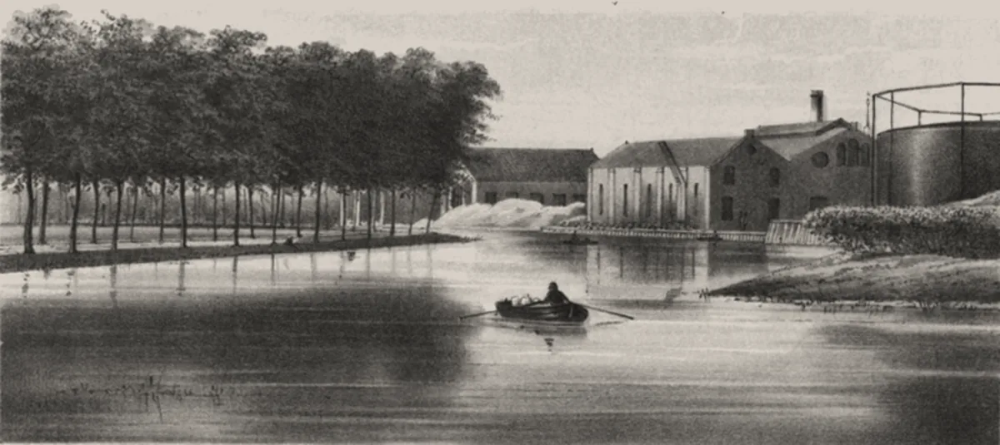

· Edición 16 · 5 min de lectura
Imaginemos: una regla del gas que dure más que un gobierno

Litografía de Gerardus Johannes Bos, 1859 · Dominio público, vía Wikimedia Commons
Imaginemos: una regla del gas que dure más que un gobierno
Ver todo el tema, de principio a fin →
En pocas palabras. Colombia se está quedando sin gas propio y cada vez lo compra más caro afuera. Parte del problema es que las reglas para buscar gas cambian con cada gobierno, y encontrar gas toma casi diez años. Hoy imaginamos una regla que dure más que un gobierno.
Cuál es el problema. Piense en una finca de mangos. Un árbol tarda años en dar fruta. Si cada cuatro años llega un dueño nuevo que cambia las reglas (hoy se siembra, mañana se prohíbe, pasado se vuelve a sembrar), la finca nunca cosecha.
Eso le pasa al gas. Un yacimiento tarda casi diez años en producir, pero la regla cambia cada cuatro. Según la Agencia Nacional de Hidrocarburos, el gas que tenemos comprobado alcanza para 5,9 años. Y en agosto, de cada 3 unidades de gas que usamos, 1 llegó en barco.
Por qué importa en su casa. El gas de afuera es mucho más caro. En 2026, el gas colombiano se vendió a unos 8 dólares (medido en millones de BTU, la unidad con que se negocia el gas). El importado, en contratos nuevos para septiembre a noviembre, a casi 25 (Fuente única; no verificado.). Es decir, unas tres veces más.
Con una cuenta gruesa nuestra, esa diferencia cuesta unos 1.000 millones de dólares al año, y se paga en la factura.
Qué han hecho otros países.
- Noruega abre cada año, desde 2003, una convocatoria para buscar gas en zonas que se conocen de antemano. Las empresas saben qué viene, y el Gobierno dice que esa previsibilidad es la clave. Un estudio de la Universidad de Chicago, con datos de Texas, encontró algo parecido: cuando hay incertidumbre, las empresas perforan menos.
- Argentina creó en 2020 subastas de contratos a cuatro años con precio fijo. Parece que frenó la caída de la producción, aunque nadie lo ha medido de forma independiente. Tuvo un costo: el Estado pagó parte del precio.
- Chile construyó un puerto para recibir gas en barco después de que Argentina le cortara el suministro en 2004. Empezó a operar en 2009 y costó hasta 1.200 millones de dólares. Sirvió de puente.
Y el fracking. El fracking es sacar gas rompiendo la roca con agua a presión. Una revisión de 52 estudios, publicada en 2024, encontró que casi todos los que miraron nacimientos cerca de pozos (22 de 24) hallaron al menos un efecto dañino, como bebés con bajo peso. En Colorado, Estados Unidos, respondieron en 2020 exigiendo unos 600 metros entre pozos nuevos y casas, con excepciones.
Imaginemos. Una ley del gas que dure diez años, con cuatro piezas:
- Buscar gas todos los años. Cada año se abre una convocatoria para explorar, en zonas anunciadas con dos años de anticipación. Un gobierno puede agregar zonas, pero no suspenderla sin una ley nueva.
- Contratos largos para el gas de las casas. Cada año se subastan contratos de cinco a ocho años, con un precio máximo atado al del gas importado. El gas colombiano compite contra el del barco.
- Los barcos, como puente. Los puertos para recibir gas en el Caribe y el Pacífico se contratan con fecha de revisión, no para siempre.
- Fracking solo con reglas claras. Antes de empezar, universidades públicas y el Instituto Nacional de Salud miden la salud, el agua y los temblores de la zona, y lo publican. Hay una distancia mínima a casas y escuelas. Y si la medición encuentra daño, se para automáticamente.
Los hogares de estratos 1 y 2 conservan el subsidio al gas básico. La idea es que un ambientalista y un petrolero salgan igual de incómodos.
Cuánto costaría. Lo nuevo sale relativamente barato. El puerto del Pacífico cuesta entre 150 y 172 millones de dólares. Medir la salud y el agua cuesta, por nuestra cuenta, unas decenas de millones, que pagarían las empresas con un cobro por pozo. El subsidio a estratos 1 y 2 ya existe. Lo caro es no hacer nada: esos 1.000 millones al año.
Pero ojo.
- Una ley también se puede tumbar: el Congreso de 2030 puede deshacer lo que apruebe el de 2027.
- Los ambientalistas dirían que amarrar diez años de exploración choca con los compromisos contra el cambio climático.
- La industria diría que tantas mediciones y distancias demoran justo lo que se necesita rápido.
- Si el precio máximo queda muy bajo, nadie ofrece gas; si queda muy alto, el usuario paga de más.
- Y ningún contrato firmado en 2027 prende una estufa antes de 2030.
Quién decide y cuándo
Quién decide. La ley la aprueba el Congreso, empezando por las comisiones quintas, que tratan minas y energía. Las subastas las hace la CREG, la comisión que pone las reglas de la energía y el gas. Las convocatorias para buscar gas, la Agencia Nacional de Hidrocarburos. Los permisos de fracking, la ANLA (la autoridad de licencias ambientales) y el Consejo de Estado.
Cuándo. No conocemos ningún proyecto de ley como este. No hay fecha.
Cómo participar. La CREG publica sus borradores para que cualquier persona los comente. La ANLA hace audiencias públicas. Y a los congresistas se les puede escribir con un derecho de petición.
La paradoja del día
Quien compra poco gas lo paga más caro que quien compra mucho. En 2025, los hogares pagaron en promedio 48,9% más que las grandes empresas, según la Superservicios. La empresa negocia; la estufa no tiene quién la represente.
Para conversar
La pregunta. ¿Usted estaría de acuerdo con una ley que no deje al próximo gobierno, sea cual sea, cambiar la regla del gas durante diez años? ¿Qué pieza le quitaría o le agregaría?
Qué puede hacer usted. Entrar a la página de la CREG, buscar los borradores sobre gas abiertos a comentarios y dejar el suyo.
Para leer más
El gobierno de los bienes comunes, de Elinor Ostrom (1990; en español, Fondo de Cultura Económica, 2000). La primera mujer en ganar el Nobel de Economía estudió pueblos que llevan siglos compartiendo agua, bosques y pesca sin agotarlos. Su hallazgo ayuda a pensar este tema: las reglas que duran son las que la gente ayuda a diseñar y puede vigilar, no las que cambian con cada gobierno.
The Quest (La búsqueda), de Daniel Yergin (2011). Un recorrido por cómo los países han buscado asegurar su energía: petróleo, gas, carbón y renovables, con sus aciertos y sus crisis. Es largo, pero se lee como una historia. No confirmamos que tenga edición en español.
¿Le interesa ver las fuentes?
20 fuentes: 4 académicas, 11 oficiales, 1 de una organización, 4 de prensa.
- Oficial Presidencia de la República (informe de la ANH y el Ministerio de Minas). Reservas de petróleo aumentaron a 7,4 años y las de gas a 5,9 años
- Prensa Infobae. Colombia perdió la autosuficiencia en gas: el país ya importa el 34% de sus necesidades
- Oficial Superintendencia de Servicios Públicos Domiciliarios. Análisis de la formación de precios del gas natural en Colombia (2026)
- Prensa El Colombiano. Precio del gas importado se dispara 79% en Colombia y revive debate sobre fracking
- Oficial Ministerio de Economía de Argentina. Plan Gas.Ar
- Oficial Boletín Oficial de la República Argentina. Decreto 892/2020: Plan de promoción de la producción del gas natural argentino 2020-2024
- Académica Universidad Nacional de José C. Paz (revista Pertinencia Social). El Plan Gas.Ar: una política pública energética de largo alcance
- Prensa Mundo Empresarial. Gasíferas recibirán subsidios del Gobierno por US$ 620 millones este año
- Oficial Norwegianpetroleum.no (Ministerio de Energía de Noruega). Exploration policy
- Académica American Economic Review (Ryan Kellogg). El efecto de la incertidumbre en la inversión: evidencia de la perforación petrolera en Texas
- Organización Global Energy Monitor. Quintero LNG Terminal
- Oficial Ministerio de Minas y Energía. Regasificadora del Pacífico
- Prensa El Espectador. Colombia tendrá segunda regasificadora: el Pacífico entrará en operación a finales de 2026
- Oficial Comisión de Regulación de Energía y Gas (CREG). CREG expide nueva resolución que flexibiliza contratos y garantiza el abastecimiento de gas
- Oficial Comisión de Regulación de Energía y Gas (CREG). Subsidios a los usuarios de estratos 1 y 2 del servicio de gas combustible por redes
- Oficial Presidencia de la República. Decreto 328 de 2020: proyectos piloto de investigación integral en yacimientos no convencionales
- Oficial Comisión Interdisciplinaria Independiente (copia publicada por Colombia Libre de Fracking). Informe sobre efectos ambientales y económicos de la exploración en yacimientos no convencionales
- Académica Canadian Journal of Public Health (Aker y otros). Efectos en la salud humana del desarrollo de petróleo y gas no convencional: revisión de estudios epidemiológicos
- Académica Science Advances (Currie, Greenstone y Meckel). Fracturamiento hidráulico y salud infantil: nueva evidencia de Pensilvania
- Oficial Comisión de Petróleo y Gas de Colorado. Respuesta al estudio de efectos en la salud del Departamento de Salud Pública de Colorado
Glosario
- Ronda de exploración: convocatoria en la que el Estado ofrece áreas para que las empresas busquen petróleo o gas.
- Subasta de contratos de largo plazo: el Estado pide ofertas de gas para varios años y gana quien ofrece el menor precio.
- Línea base: la medición de la salud, el agua y el suelo antes de que empiece una actividad, para comparar después.
- Regla de parada: condición escrita de antemano que obliga a detener una operación si el monitoreo encuentra daño.
- Millón de BTU: unidad de energía con que se negocia el gas; BTU es la unidad térmica británica.
- Regasificadora: planta que devuelve el gas natural licuado a su estado de gas.
- Consumo de subsistencia: los primeros metros cúbicos al mes de un hogar, los que reciben subsidio en estratos 1 y 2.
Nota metodológica
Esta propuesta es un ejercicio de Otra lectura para pensar, no una verdad ni el programa de ningún partido. Tomamos el nudo del gas, tratado el 28 de septiembre, porque es el que más se ha movido este mes, y lo armamos buscando que cada bando ceda algo. Hicimos unas 20 búsquedas en español e inglés, en documentos oficiales de Colombia, Argentina y Noruega, revistas académicas y prensa para los precios recientes. No pudimos abrir los documentos completos; trabajamos con resúmenes y no les atribuimos más de lo que dicen.
Quedó sin verificar o con límites:
- El sobrecosto de unos 1.000 millones de dólares al año es una estimación nuestra: supone un consumo cercano a mil millones de BTU por día (Conocimiento general.), 34% importado y una diferencia de 8 dólares por millón de BTU.
- El costo del monitoreo de salud y agua es un orden de magnitud nuestro, sin fuente.
- El precio de 24,97 dólares del gas importado y el de febrero vienen de la prensa (Fuente única; no verificado.); el 34% importado viene de Promigas, empresa con interés en la importación.
- El costo de la terminal del Pacífico viene de la prensa; el de Quintero, de Global Energy Monitor.
- Que el Plan Gas.Ar frenó la caída de la producción viene de un análisis descriptivo, no de una evaluación de impacto.
- La distancia de Colorado es de 2.000 pies, con excepciones; la equivalencia en metros es nuestra.
- Cómo se financia hoy el subsidio de estratos 1 y 2 (Conocimiento general.).
La litografía es de Gerardus Johannes Bos (1859) y muestra la fábrica de gas de Leiden, en los Países Bajos; es de otra época y la usamos para evocar el tema.
Este borrador se escribió el 29 de septiembre y se publicó el 3 de octubre. Antes de publicarlo revisamos que las cifras siguieran vigentes: el alza de 79 % en el precio del gas importado para los contratos de septiembre a noviembre sigue siendo el dato más reciente. Los libros de «Para leer más» los elegimos por el tema; ninguno está en Santo & Seña, y sus datos (año y editorial) salen de resultados de búsqueda.